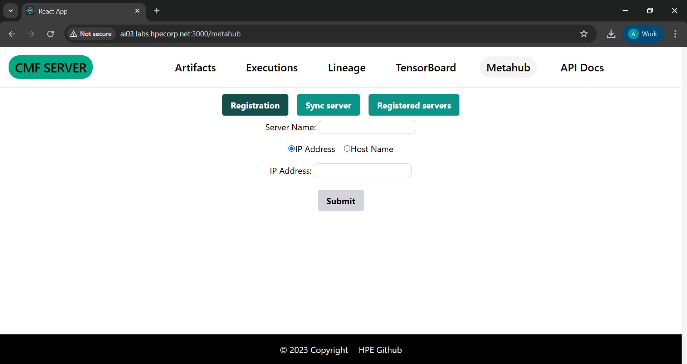
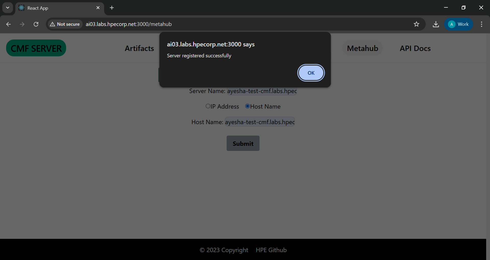
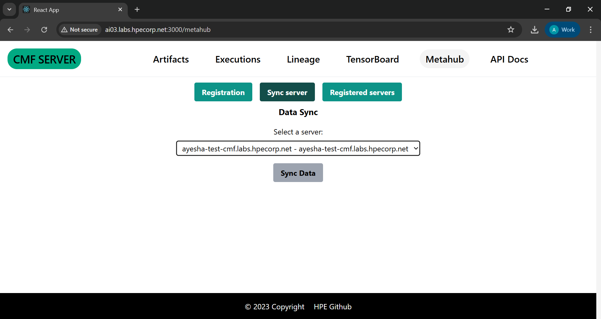
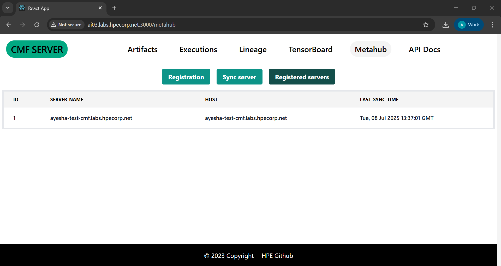

Introduction to Metahub Feature¶
The Metahub feature is introduced to synchronize metadata between two CMF servers. This document explains how to use this feature effectively via the GUI.
Steps to Use Metahub feature¶
1. Start the CMF Server¶
Ensure that the CMF server is up and running. you can follow below document.
2. Navigate to Metahub Tab¶
In the GUI, locate and click the Metahub tab from the navigation panel.
After clicking the Metahub tab, you will see three tabs:
- Registration → Register a new server for syncing.
- Sync Server → Perform sync with a registered server.
- Registered Server → View the list of registered servers.

Registration Tab¶
The Registration tab allows you to register another server that you want to sync with.
📝 Functionality:¶
- Register the target server you want to sync with.
- You can provide either:
- Server Name + IP Address
or - Server Name + Hostname
- Server Name + IP Address
- Click Submit. You’ll receive a message confirming whether the server registration was successful.

Sync Server Tab¶
The Sync Server tab is used to sync metadata with a registered target server.
📝 Functionality:¶
- A dropdown will show all the registered target servers.
- Select a server from the list.
- Click to sync. If the selected server is available and properly registered, the sync will succeed. Otherwise, it will fail.
¶
Registered Server Tab¶
This section displays all registered servers in a table format.
📝 Functionality:¶
- View the list of all registered target servers.
- The table includes a
last_sync_timecolumn to indicate when each server was last successfully synced.

📌 Make sure all servers involved are running and reachable via the provided IP or hostname.